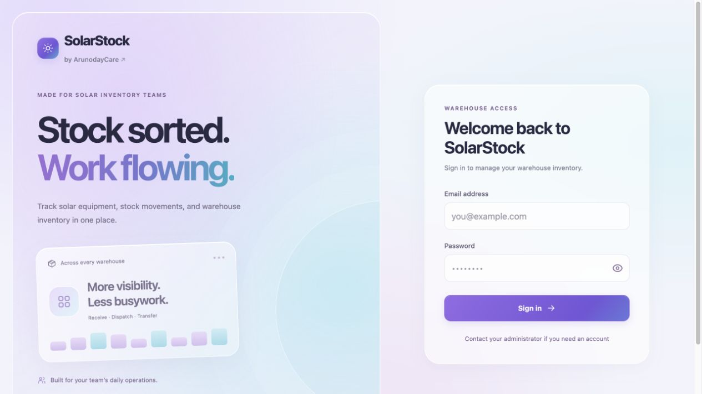
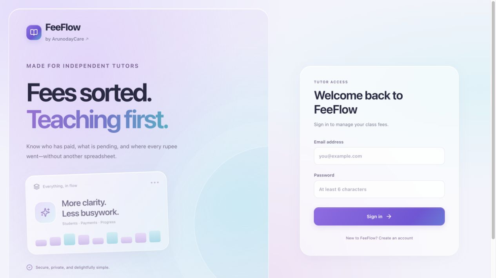

Custom business apps
Purpose-built tools for workflows such as inventory, fees, requests and operational tracking.

Replace a scattered process with one useful place to manage the work. From a focused tool to a custom business application.
Purpose-built tools for workflows such as inventory, fees, requests and operational tracking.
A PWA is a web app that can be added to a supported device’s home screen and opened like an app, without an app store download.
Start with a task your team repeats. We can review the process, identify what to simplify, and define an app around it.
These live web applications show the kind of business tools we build. The public links open sign-in screens; workspace access is required. PWA capabilities are scoped separately for each project.

The need Give warehouse operations a dedicated place to manage inventory.
Delivered An inventory management web application with a dedicated workspace and sign-in.
Live application · Workspace sign-in required
Explore application (opens in a new tab)
The need Help independent tutors keep track of class fees and payment status.
Delivered A tuition fee tracker for viewing paid and pending payments in a dedicated workspace.
Live application · Workspace sign-in required
Explore application (opens in a new tab)Tell us who will use the app, what they need to do, and how the work happens today. We’ll help define a focused first version and the features that can follow.
Access, data, integrations and support are discussed as part of the project scope.
You don’t need a technical brief. Share what you need, what you already have, and what’s getting in the way.